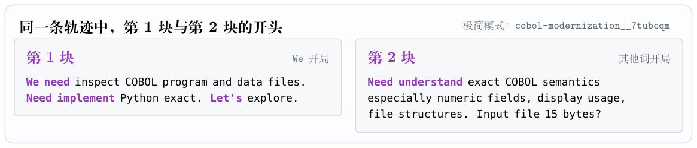
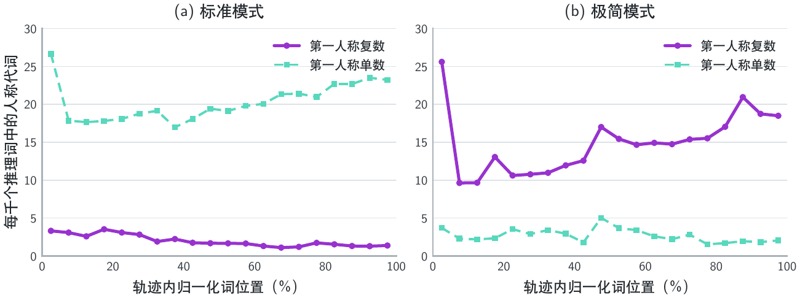
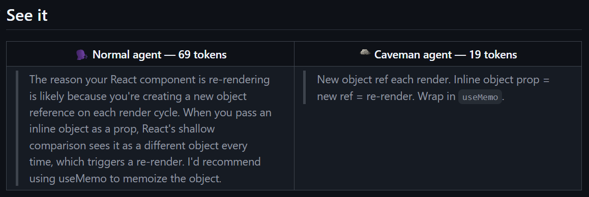
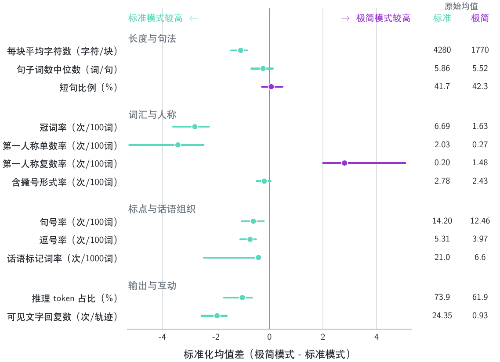
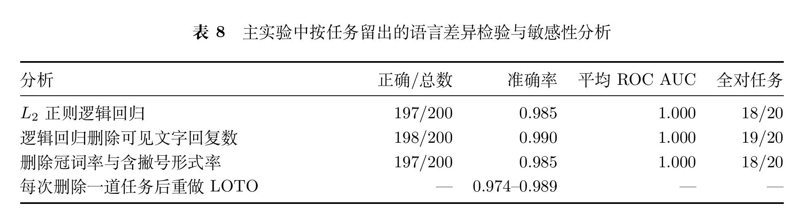

我也会数 We，数数 We
本章结论：把 V4 Pro 在极简模式下的语言特征挖穿；没测出语言特征和模型跑分有啥联系
数 We 是很好数的，我也来数数 We。
这部分细节对应 PDF 长文 P9–P15。


We 开头很好改
不涉及跑完整个轨迹的实验都很便宜。
用 极简 / 标准 system prompt，搭配极简 / 标准的工具，加上 Terminal Bench 2.1 测了的 20 个初始题目输入，每题测 3 次；共 20 × 4 × 3 = 240 个样本。
| We 开头 | 极简 system prompt | 标准 system prompt |
|---|---|---|
| 极简工具定义 | 100% | 10% |
| 标准工具定义 | 56.7% | 3.3% |
社区插件们拿来识别“灰测灵魂”的第一个词，不是一个不可触碰的“模型内部状态指示灯”，大大方方调。
顺手也测了一下 200 条轨迹里第一人称单复数的使用率，结果如下:

还是那句话：如果真的操控是不是 We 开始，就能提高 Agent 交付质量，那数据飞轮也不用造了，哪有这么好的事情？
用什么词开头就是一个口癖。不能代表交付质量。
模型口癖——电报式语言
PDF 长文里一直把这个口癖很严肃地叫“模型的语言形态”。改个叫法，再次强调，防止有人把它当成模型能力的标记。
Caveman skill 是 JetBrains 做过的一项实验。中文有类似的，让模型输出文言文。
短句，省主语，不是“好思维链”的代名词；原作者提出这个 skill，是为了说话省 token 省钱（虽然研究后发现也省不了多少钱），不是为了追求能力提升，瞎搞！
JetBrains 狠狠测过，结果如下:
skill说自己能省好多好多——65%！假！骗人！光说话不干活才省。真干活（写代码、叫工具），最多省一点点，就 8.5%。要是让AI自己选要不要省，省更少，甚至一毛不省！
然行事之良窳，未尝有损也，善哉！试之八十有二回，用与不用，其绩无殊。呜呼！彼未尝言此法能增益其能，惟虑或损之耳。今既无损，足矣。
钱？言省，似美，实费。省组费多，不省组费少，反多费。一任务费骤涨，尽没，省尽失。

截图来源：JetBrains，《Does Speaking to Agents Like Cavemen Really Save 65% of Tokens?》；用于评论该实验，不适用本站 CC BY 4.0。
语言分类器：想分析模型语癖，各位别半途而废
人眼看了 200 道轨迹，提取出 12 个可以写成 python 脚本来提取的数值特征。远不止 We need 和 Let me。
推理块的长度：
- 每个推理块的平均字符数
- 推理块内所有句子词数的中位数
句子结构：
- 不超过 4 个词的短句比例
词汇和人称：
- 冠词率
- 第一人称单数率
- 第一人称复数率
- 撇号缩写率
标点和关键词：
- 句号率
- 逗号率
- 关键词出现率，包括：wait, hmm, okay, alright, interesting, actually
输出和互动：
- 推理 token 占输出 token 的比例
- 模型给人的报告次数

用这 12 条特征训练了一个“语言分类器”：输入一个对话，判断：对话内的模型语气，偏向：
- 极简模式下，V4 Pro 0813 的语气【极简语气】
- 标准模式下，V4 Pro 0813 的语气【标准语气】

以及一些有趣的小结果：
- 在 VISTA（前端任务）上，分类器能将 V4 Pro 的语癖 100% 分类正确；
- 模型换成 GLM-5.3，GLM-5.3 接到极简模式，偏向【标准语气】（PDF 长文第六章）
- 在 Windows + 极简模式（
dev-0.1.0-rc.7之前）下，V4 Pro 会发现bash用不了，急得团团转，但还是改不了偏向【极简语气】（PDF 长文第六章）
\downarrow
插件都在：
- 保留模型语言特征，给它更多工具
但是简单测试一下就能发现：
- 就算你不给它好工具用，模型还是有 We need 系列的口癖
数语言当然有意思。拿语言替代能力评估，没意思。
我看是社区把自己拟合到灰测思维链上去了，之后是不是还要对着八月灰测，做 I'm doing 插件……？我不明白。
哦对，我也有八月灰测的对话记录，分类器说它是纯血的【标准语气】，所以口癖代表不了什么。
从语言指纹到插件机制：社区多走了哪一步
仓库 A 与 附属插件：单项目高分不能定位 RL 机制
某冻结题面、隐藏测试和评分规则的复合工程项目；
作者也明确反复声明它是个人自测套件，不是公共 benchmark，结论不外推到其他项目。
然而：
你可以用一个复合项目证明某个配置在这个项目上跑到了 96/99； 但你不能仅凭这个项目、每种配置一至四次运行、且配置内部多个变量共同变化，就声称 已经把增益“定位到首次请求的 RL 对齐 scaffold”。
插件声称根据首轮任务选择不同推理模式，并围绕 We / Let me 建立了一套模式理论；
但其后续修复记录表明，早期真实产品链路中的首轮路由没有按文档工作，部分注入路径也没有进入预期请求。
我相信你在自己的 Project2 上跑出了 96/99。但是最想质疑的是，你们凭什么从这个结果跳到“RL 对齐策略已经被定位”。
仓库 B：理论跑在真实产品验证之前
这是更完整的社区方法论案例
一个迅速获得大量社区关注的仓库。README 同时宣传 “P1–P23、路由 96%、收敛 100%、若干 +5.0、+5.7” 的测量结果；历史文档还把 “21 个 persona mode 点、每点 n=2 的探针”解释成“三个稳定行为带”，定义轰炸。
但它自己的后续修复记录承认，早期版本在真实 DeepSeek Harness 装配链上存在非常实质的问题：
- 首轮路由实际上没有按任务工作，而是无条件落入 weak；
- 原近距离引导路径在 Agent plane 中不会触发；
- 某些情况下反而会额外制造第二次 API 调用；
- 还有缺失导入导致的运行时错误。
这些不是你推测的，而是维护者自己的 README 和 v0.3.0 发布记录。
更关键的是，维护者随后发布勘误，明确承认曾经“把现象当成了本质”，撤回“官方刻意设计双模式”“路由层训坏了”等强归因，只保留现象和实验数据。这个好！
勘误恰好证明了本文要指出的问题：
- 关于 We need、模式相变和 RL 路由的宏大机制叙事，曾经跑在真实产品链路验证之前。
- 插件已经围绕语言形态构建起来，后来才发现首轮路由本身没有按描述运行。
产品链路是否真正工作，本应先于关于吸引子、断裂带和 RL 模式的机制理论。
但是你还没回撤的这些，不也是左右脑互博？
Let me 是“旧的、低效的、左右脑互搏”的路径；
We need 是后训练“新压出来的、更高效、更高性能”的路径；
两者之间有“断层/断裂带”；
插件应把这个断层作为自适应门控来利用。
之后先测一下，We 是不是真的高效吧。